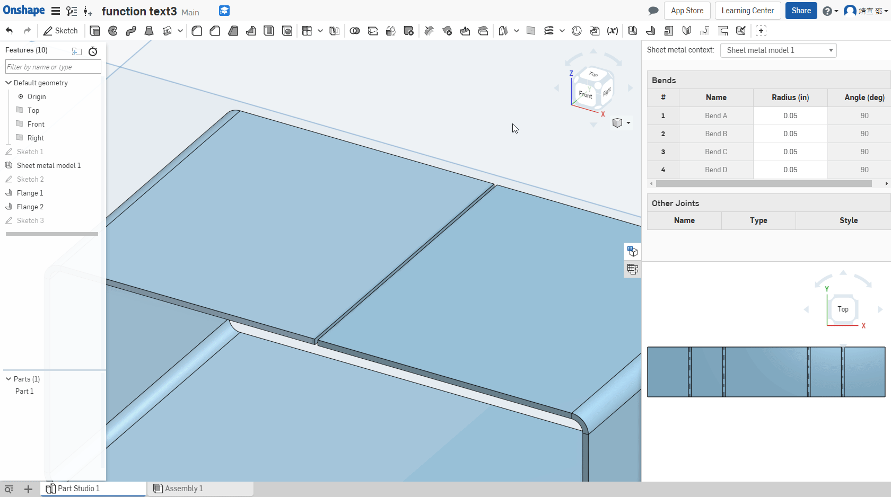

Sheet Metal
Convert 轉換 ↓

Extrude 擠出 ↓

Thicken 加厚 ↓

Flange 凸緣 ↓

Tab 薄板頁 :
選擇一個凸緣上的兩個草圖 ↓
 上的兩個草圖.gif)
選擇平行於兩個凸緣的草圖 ↓
 的一個草圖.gif)
使用集差範圍來建立薄板頁 ↓

橋接兩個凸緣 ↓

Make Joint 製作接合 ↓

Corner 角落 ↓

Bend Relief 彎折離隙 ↓

Finish Sheet Metal Model 完成鈑金模型 ↓

Assembled << Previous Next >> Independent study